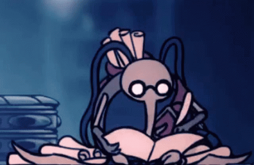

Hello.
I am a videogames lover and FullStack Web Developer. I'm a sistems engineer student and I ❤️ the coffee and learn new things.
My Skills

Development
I started learning to code when I was 16 years old because I wanted to make my own video games. Over time, I have gained a wealth of experience designing and developing web applications.

My hoobies
I love video games, especially indie games. My favorite video game is hollowknight and it was thanks to this world that I became interested in the world of programming. I also love to read, Isaac Asimov made me love science fiction and through this I loved the world of technology.